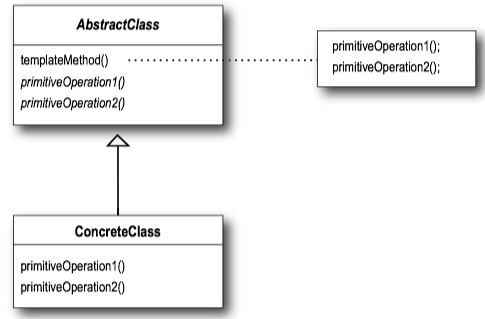
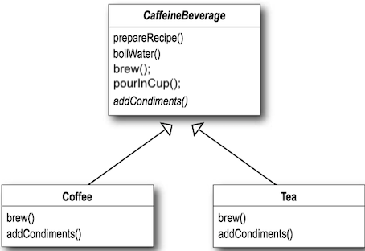
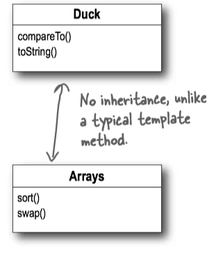
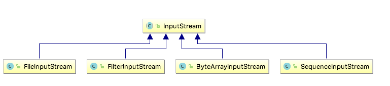
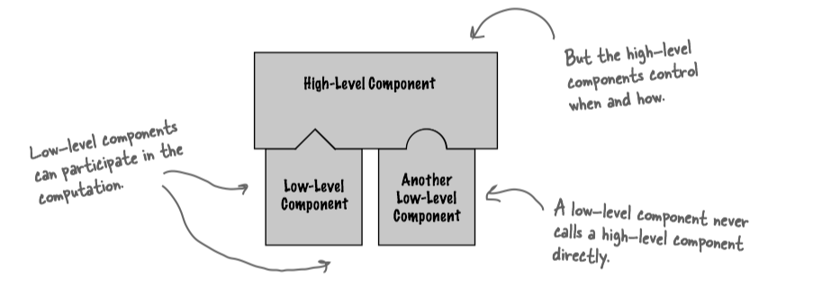

Head First Design Patterns 8 - Template Method Pattern¶
1 Template Method Pattern¶
Template Method Pattern defined¶
The Template Method Pattern(模版方法模式) defines the skeleton of an algorithm in a method, deferring some steps to subclasses. Template Method lets subclasses redefine certain steps of an algorithm without changing the algorithm’s structure.
This pattern is all about creating a template for an algorithm. A template is a method that defines an algorithm as a set of steps. One or more of these steps is defined to be abstract and implemented by a subclass. This ensures the algorithm’s structure stays unchanged, while subclasses provide some part of the implementation.
Template Method Pattern Class Diagram¶

- The
AbstractClass contains the template method. - The template method makes use of the
primitiveOperation s to implement an algorithm. It is decoupled from the actual implementation of these operations. - There may be many
ConcreteClasses , each implementing the full set of operations required by the template method.
abstract class AbstractClass { // Here's the template method // It's declared final to prevent subclasses from reworking the sequence of steps in the algorithm. final void templateMethod() { // The templateMethod defines the sequence of steps, // each represented by a method. primitiveOperation1(); primitiveOperation2(); concreteOperation(); } // In this example, two of the primitive operations // must be implemented by concrete subclasses. abstract void primitiveOperation1(); abstract void primitiveOperation2(); // We also have a concrete operation defined in the abstract class. void concreteOperation() { // implementation here } // A concrete method, but it does nothing! // We can also have concrete method, which do nothing by default; // We call these "hooks". Subclasses are free to override these, // but don't have to. void hook() {} }
Question
When to use abstract methods and when to use hooks?
- Use abstract methods when your subclass MUST provide an implementation of the method or step in the algorithm.
- Use hooks when that part of the algorithm is optional. With hooks, a subclass may choose to implement that hook, but it doesn’t have to.
Example - CaffeineBeverage¶
Tea and coffee are made in very similar ways. Notice that both recipes follow the same algorithm:
- Boil some water.
- Use the hot water to extract the coffee or tea.
- Pour the resulting beverage into a cup.
- Add the appropriate condiments to the beverage.

public abstract class CaffeineBeverage { final void prepareRecipe() { boilWater(); brew(); pourInCup(); addCondiments(); } abstract void brew(); abstract void addCondiments(); void boilWater() { System.out.println("Boiling water"); } void pourInCup() { System.out.println("Pouring into cup"); } }
public class Coffee extends CaffeineBeverage { public void brew() { System.out.println("Dripping Coffee through filter"); } public void addCondiments() { System.out.println("Adding Sugar and Milk"); } } public class Tea extends CaffeineBeverage { public void brew() { System.out.println("Steeping the tea"); } public void addCondiments() { System.out.println("Adding Lemon"); } }
public class BeverageTestDrive { public static void main(String[] args) { Tea tea = new Tea(); Coffee coffee = new Coffee(); System.out.println("\nMaking tea..."); tea.prepareRecipe(); System.out.println("\nMaking coffee..."); coffee.prepareRecipe(); TeaWithHook teaHook = new TeaWithHook(); CoffeeWithHook coffeeHook = new CoffeeWithHook(); System.out.println("\nMaking tea..."); teaHook.prepareRecipe(); System.out.println("\nMaking coffee..."); coffeeHook.prepareRecipe(); } }
Example - Arrays.sort()¶
Let’s trace through how the Arrays
- First, we need an array of Ducks:
Duck[] ducks = {new Duck(“Daffy”, 8), ... }; - Then we call the
sort() template method in the Array class and pass it our ducks:Arrays.sort(ducks); - The
sort() method (and its helpermergesort() ) control the sort procedure. - To sort an array, you need to compare two items one by one until the entire list is in sorted order.
- When it comes to comparing two ducks, the sort method relies on the Duck’s
compareTo() method to know how to do this. ThecompareTo() method is called on the first duck and passed the duck to be compared to:ducks[0].compareTo(ducks[1]); - If the Ducks are not in sorted order, they’re swapped with the concrete swap() method in Arrays.
- The sort method continues comparing and swapping Ducks until the array is in the correct order!

import java.util.Arrays; public class DuckSortTestDrive { public static void main(String[] args) { Duck[] ducks = { new Duck("Daffy", 8), new Duck("Dewey", 2), new Duck("Howard", 7), new Duck("Louie", 2), new Duck("Donald", 10), new Duck("Huey", 2) }; System.out.println("Before sorting:"); display(ducks); Arrays.sort(ducks); System.out.println("\nAfter sorting:"); display(ducks); } public static void display(Duck[] ducks) { for (Duck d : ducks) { System.out.println(d); } } }
public class Duck implements Comparable<Duck> { String name; int weight; public Duck(String name, int weight) { this.name = name; this.weight = weight; } public String toString() { return name + " weighs " + weight; } public int compareTo(Duck object) { Duck otherDuck = object; if (this.weight < otherDuck.weight) { return -1; } else if (this.weight == otherDuck.weight) { return 0; } else { // this.weight > otherDuck.weight return 1; } } }
Example - InputStream.read()¶
read(byte b[], int off, int len).

public abstract class InputStream implements Closeable { ... // Reads the next byte of data from the input stream. public abstract int read() throws IOException; ...
2 The Hollywood Principle¶
The Hollywood Principle: Don’t call us, we’ll call you.
With the Hollywood Principle, we allow low-level components to hook themselves into a system, but the high-level components determine when they are needed, and how. In other words, the high-level components give the low-level components a “don’t call us, we’ll call you” treatment.
